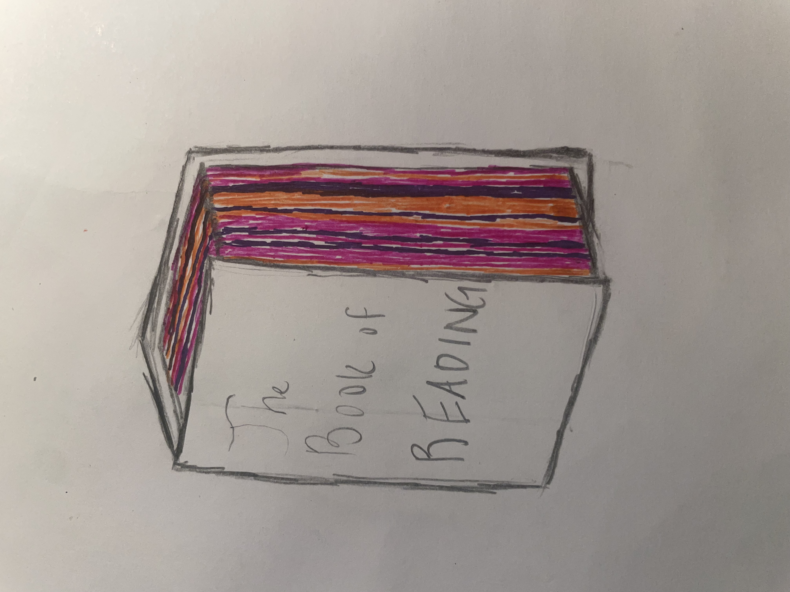
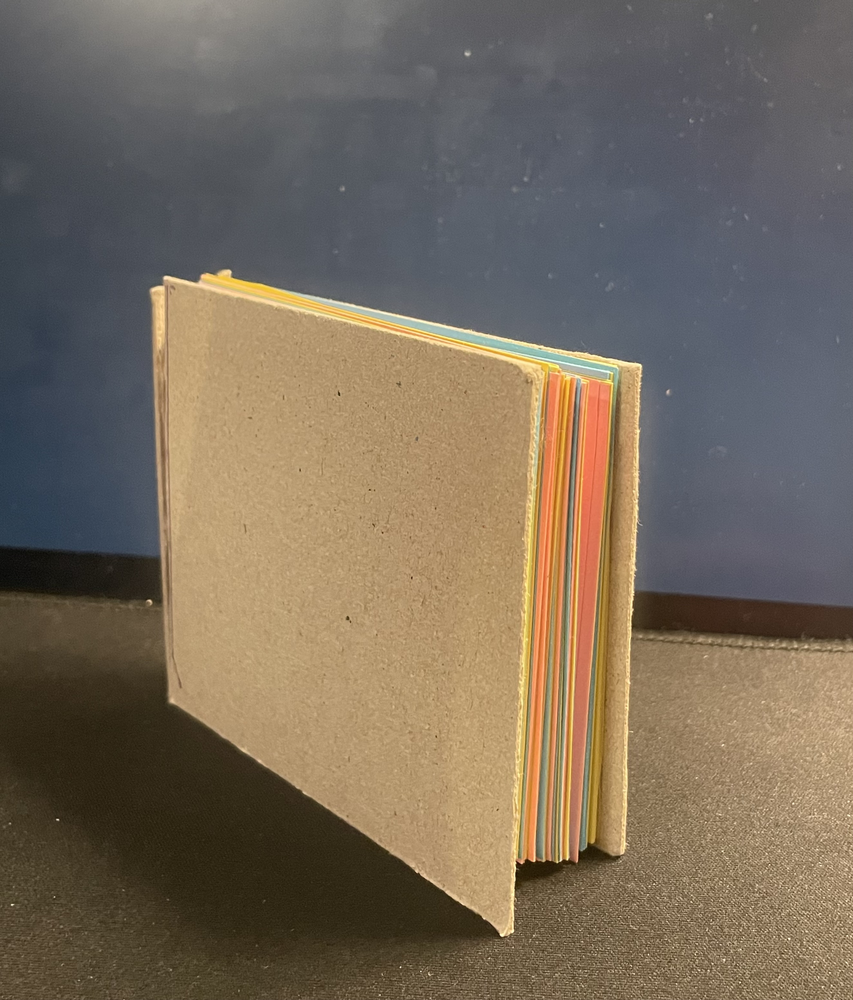

library(tidyverse) #load in packages
library(here)
library(janitor)
library(readxl)
library(ggeffects)
salinity <- read.csv( #read in pickleweed data using here function
here("data","salinity-pickleweed.csv"))
reading_data <- read.csv( #read in personal data using here function
here("data", "time_spent_reading.csv"))03_homework_193DS
Part 2 Problems
Problem 1. Slough soil salinity
###a. An appropriate test Both a simple linear regression and a Pearson’s correlation test could determine the strength of relationship between salinity, a continuous predictor variable, and California pickleweed biomass, a continuous response variable. Pearson’s correlation is a parametric test, meaning is assumes normality and uses the actual measurements of continuous data to show the strength and direction of a linear relationship. Meanwhile, Spearman’s correlation uses ranks instead of the actual values to determine a monotonic relationship between variables, making it more suitable for non-normal distributions.
b. Creae a visualization
salinity_lm <-lm( #create new object with linear model function
pickleweed ~ salinity_mS_cm, #set response and predictor variables
data = salinity) #use salinity data set
summary(salinity_lm) #display summary of salinity_lm model
Call:
lm(formula = pickleweed ~ salinity_mS_cm, data = salinity)
Residuals:
Min 1Q Median 3Q Max
-12.499 -5.819 -1.726 4.794 21.765
Coefficients:
Estimate Std. Error t value Pr(>|t|)
(Intercept) 13.0895 4.0350 3.244 0.00389 **
salinity_mS_cm 2.0832 0.7188 2.898 0.00860 **
---
Signif. codes: 0 '***' 0.001 '**' 0.01 '*' 0.05 '.' 0.1 ' ' 1
Residual standard error: 9.144 on 21 degrees of freedom
Multiple R-squared: 0.2857, Adjusted R-squared: 0.2517
F-statistic: 8.398 on 1 and 21 DF, p-value: 0.008605par(mfrow = c(2, 2)) #plot assumption graphs in a 2x2 display
plot(salinity_lm) #run assumptions test for linear model
ggpredict(salinity_lm, #create visualization with linear regression
terms = "salinity_mS_cm [0.1:9.6 by = 0.01]") |> #define scope of linear regression and CI
plot(show_data = FALSE, #don't show background data using ggpredict
color = "lightgreen") + #set color of CI
geom_point(data = salinity, #add in data points from salinity dataframe
aes(x = salinity_mS_cm, #set x axis
y = pickleweed), #set y axis
color = "darkgreen") + #set color of points
theme_minimal() + #change theme
labs(x = "Salinity (mS/cm)", #change x axis title
y = "Pickleweed biomass (g)", #change y axis title
title = "As salinity increases, pickleweed biomass increases") #change plot title
###c. Check your assumptions and run your test
Check your assumptions
par(mfrow = c(2, 2))
plot(salinity_lm)
Running the test
cor.test(salinity$pickleweed, salinity$salinity_mS_cm, #run pearson's correlation between pickleweed biomass and salinity
method = "pearson")
Pearson's product-moment correlation
data: salinity$pickleweed and salinity$salinity_mS_cm
t = 2.8979, df = 21, p-value = 0.008605
alternative hypothesis: true correlation is not equal to 0
95 percent confidence interval:
0.1568265 0.7757682
sample estimates:
cor
0.5344778 Normal distribution and a linear relationship between the variables are the main assumptions to check with a Pearson’s correlation so I created a QQ plot and referenced the previous linear model. The QQ plot showed a linear relationship between the sample and theoretical quartiles with only a slight deviation at the tails, indicating normality, while the simple linear model atop a scatterplot of data showed a positive linear relationship between salinity and pickleweed biomass. Continuous variables is evident in by the data collected (biomass and salinity exist on an infinitely precise number line) but independent observations is unclear due to lack of methods.
d. Results communication
To evaluate the strength of the relationship between pickleweed biomass and soil salinity, I used a Pearson correlation which found a moderate relationship between the two (Pearson’s r = 0.53, t(21)= 2.90), p = 0.009, \(\alpha\) = 0.05). Therefore 53% of pickleweed biomass can be explained by soil salinity and as salinity increases, so does pickleweed biomass.
e. Test implications
It appears that as salinity increases, so does pickleweed biomass, which indicates that pickleweed is a good species for sites like the slough that are high in salinity. Additionally, we can also advise the restoration team to plant pickleweed in sites with higher salinity in order to maximize growth. Knowing that pickleweed grows well in saline soils, we can prioritize these sites to create a buffer between less saline-tolerant plants.
###f. Double check your own work
cor.test(salinity$pickleweed, salinity$salinity_mS_cm, #run a spearman's correlation on salinity and pickleweed biomass
method = "spearman")
Spearman's rank correlation rho
data: salinity$pickleweed and salinity$salinity_mS_cm
S = 824, p-value = 0.003426
alternative hypothesis: true rho is not equal to 0
sample estimates:
rho
0.5928854 The Spearman’s correlation shows a moderate relationship between pickleweed and soil salinity (Spearman ρ= 0.59, S= 824, p = 0.003, \(\alpha\) = 0.05), supporting the decision to reject the null hypothesis from Pearson’s correlation and suggesting that 59% of pickleweed biomass can be explained by salinity. Spearman’s correlation indicates a monotonic relationship between salinity and pickleweed biomass. Because Spearman’s correlation uses rank sums to calculate correlation it is more robust to outliers and non-normal datasets, which is helpful when unsure about normality, but it cannot give a confidence interval around the actual relationship.
Problem 2. Personal data
a. Updating your visualizations
reading_data <- reading_data |> #use reading data frame
clean_names() |>
rename("reading_time" = "time_spent_reading_min",
"genre" = "reading_type")ggplot(data = reading_data, #create base layer with personal data
aes(x = reading_time, #set x axis
fill = genre)) + #color by genere
geom_histogram(bins = 6, #create histogram with 6 bins
color = "black") + #set border color
facet_wrap(~genre) + #separate by genre
scale_fill_manual(values = c( #change colors of genres
"Nonfiction Novels" = "forestgreen",
"News" = "pink",
"Research Paper" = "darkorchid")) +
labs(title = "Time Spent Reading Different Genres", #set title
x = "Reading time (min)", #set x-axis
y = "Count",#set y-axis
subtitle = "March 1, 2026") +
theme(legend.position = "none") #remove legend
ggplot(data = reading_data, #create plot with personal data
aes(x = number_of_pages,#set x axis
y = reading_time, #set y axis
color = genre)) + #separate by color and genre
geom_point(size = 3) + #add in individual data and adjust size
labs(title = "Reading session per number of pages", #add title
x = "Number of pages", #set x axis title
y = "Reading time (min)",#set y axis title
subtitle = "March 1, 2026") +
theme_gray() + #change theme
scale_color_manual(values = c( #change colors manually
"Nonfiction Novels" = "darkgreen",
"Research Paper" = "darkorchid",
"News" = "coral2")) +
facet_wrap(~genre) + #separate by genre
theme(legend.position = "none") #remove legend
b. Captions
Figure 1. Nonfiction novels consume the most reading time. Data was collected by the author. The height of the bars represents how many reading sessions lasted the corresponding time length within each genre. Genres are separated by panels and defined by different colors (pink: News, green: Nonfiction Novels, purple: Research Paper). Data was collected from January 6, 2026 to March 1, 2026 by Ian Del Tredici.
Figure 2. As the number of pages increases, reading time also increases. Points represent individual reading sessions with time of session (min) and number of pages recorded. Colors represent the three types of reading genres (coral: News, green: Nonfiction Novels, and blue: Research Paper). Panels also divide genres. Data collected from January 6, 2026 to March 1, 2026 by Ian Del Tredici.
Problem 3. Affective visulization
a. Describe in words what an affective visualization could look like for your personal data (3-5 sentences).
For my personal data project I will paint the outer pages of a book different colors based on the genre and time spent reading each genre. To start I will sum the total reading time and compare that to the total number of pages in a book I buy to create a ratio of pages to minutes read. I can then determine how many pages I need to paint and what color to paint them. The final version of the visualization will be a book with fore-edge painting based on the amount of time I spent reading each genre. You should be able to visually tell relative time spent reading each genre and how the abundance changed over time.
b. Create a sketch (on paper) of your idea.
knitr::include_graphics(here("code", "data_vis_sketch.jpeg")) #insert image of sketch
c. Create a draft of your visualization.
knitr::include_graphics(here("code", "data_vis_draft.jpeg")) #insert image of sketch
d. Write an artistic statement
My data visualization showcases my reading habits by painting the fore-edge of a book different colors based on the different genres. In other words, each stripe on the book represents the genre and time spent reading each genre.
I was influenced heavily by the warming stripes visualization shown in class that depicts the average temperature of each year since 1850. I’ve also seen very detailed fore-edge painting of a book which inspired me to combine the two ideas into one.
The work will be created using acrylic paints on a physical book.
To start, I created a ratio of minutes read to physical pages and used that to map my data set onto a physical book. Using those marking to delineate the number of pages that needed to be painted for each reading session, I used acrylic paints to carefully paint according to the genre. Each of the 31 reading sessions was painted across the depth of the book, creating a myriad of colorful stripes that visually show the most common genre of reading I did.